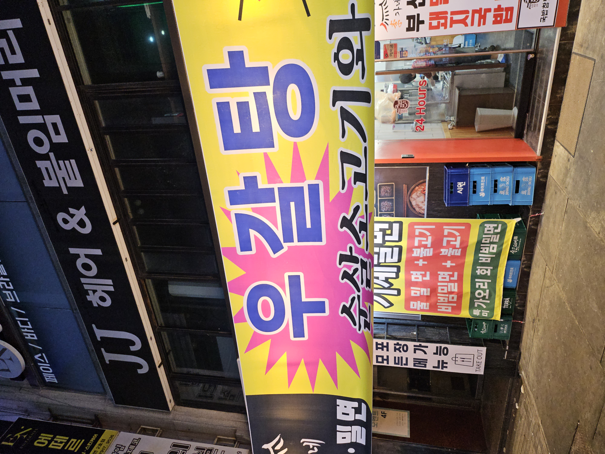
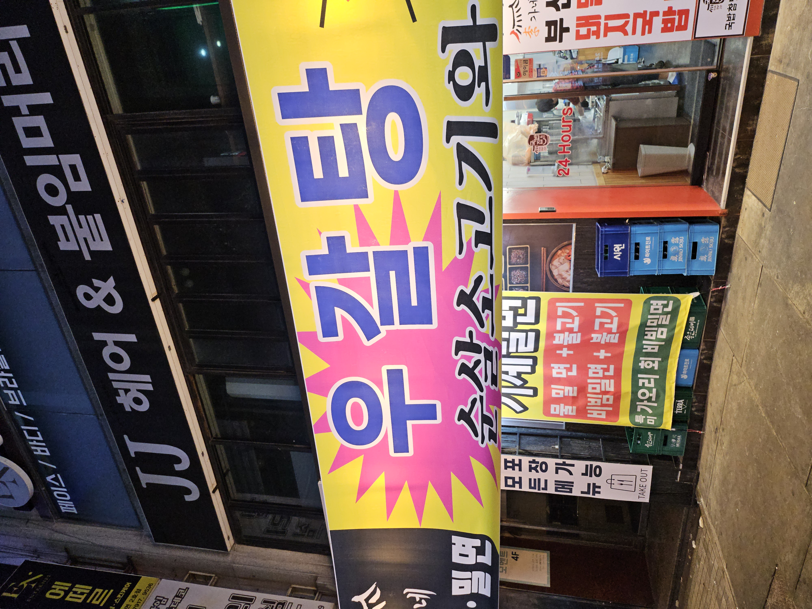

유치하지만
알록달록한 색의 건물 많아서 기억에 남는다. 이런 말하기 좀 그럴수 있지만 서울에서는
집 건물 색이 노랑이거나 분홍 등이면 어릴때 "느그집 민트색" 이렇게 놀릴꺼 같은데 여기서는 좀 흔한것 같다.
경남 해안가다 보니 산업적으로 조선업이나 중화학업에서 파생된 페인트 수요가 생활용으로도 이어지지 않았을까 하는 추측을 해본다.
원색이 주는 느낌 올드함을 너머로
엠즤이 세대가 갈만한 트렌디한 가게들도 많았다. 이거는 좀 분명히 느낀 부분인데 디지털 인스타 도입되면서 바로 미적으로 확 건너뛴 느낌? 그러니까 옛날 유행 - 조금 옛날 유행 - 요즘 유행 이렇게 단계적으로 바뀐게 아니라 옛날 유행 - 요즘 유행 바로 점프한것 같다. 위 활자랑 이런 색상 측면이 합쳐지면 부산 특유의 느낌이 나서 좋았다.


 



 d
d